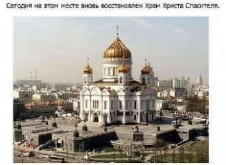

Вдруг все застыло, замерзло вокруг и чувствую я,Что тебя теряю, понимаю… Все оборвалось, как тонкая нить.Ничего уже не изменить. Я знаю, точно знаю.
Припев:Как красиво ты молчишь, когда рядом с ней,Но мне уже не больно, я сильней. Крадётся твоя тень за моей спиной,
Tonight the world will sleepBut hunger will not wait For promises we made We share one soul We share one land
I dream for a dayWhen there’ll beNo more misery
You can dance, you can jive, having the time of your lifeSee that girl, watch that scene, diggin' the Dancing Queen
Слышу голос из Прекрасного ДалекаГолос утренний в серебряной росеСлышу голос и манящая дорогаКружит голову как в детстве карусель
Ton regard oblique En rien n'est lubrique Ta maman t'a trop fessé Ton goût du revers N'a rien de pervers Et ton bébé n'est pas fâché
В роще пел соловушка, там вдали, Песенку о счастье и о любви.Песенка знакомая, и мотив простой.
Ой! Ой как ты мне нравишься.Ой-ёй-ей-ёй!
Свет твоего окнаДля меня погас,Стало вдpуг темно.И стало всё pавно,Есть он или нет,Тот волшебный цвет...Свет твоего окна -
I know you're feeling restlessLike life's not on your sideIt's weighing heavy on your mind
За печкою поет сверчок,Угомонись, не плачь, сынок.Вон, за окном морозная синяя ночка,Звездная синяя ночка,Звездная синяя ночка,Звездная.

02.05.2015г.
17.18ч.
Совесть - как храм,
Как сосуд для грехов,
Как колыбель для стихов,
01.05.2015г.
21.13ч.
Любовь поэта может быть взаимной…
Так не бывает - кто-то скажет - ну и пусть!
21.04.2015г.
19.47ч.
Когда в стихах нет почерка -
В них нет и монолога,
А в росписи нет росчерка,
1. Я пылинка, горсть земли
Богом создана из праха,
Что могу я принести
Доброго? Живя без страха.
Существую я сейчас,
Богинь прекрасных жар волнует,<
Как грустно, милая, так странно,В груди горит зари огонь,
Никак я не могу понять
Ведь не пришла как будто старость
Твои любимые чертыТак для меня необходимыИ лишь о том прошу судьбу
Ты спишь, а на улице ветерТы спишь, а на улице дождьЗа наши дела только мы лишь в ответе,Надеюсь, ты это поймешь